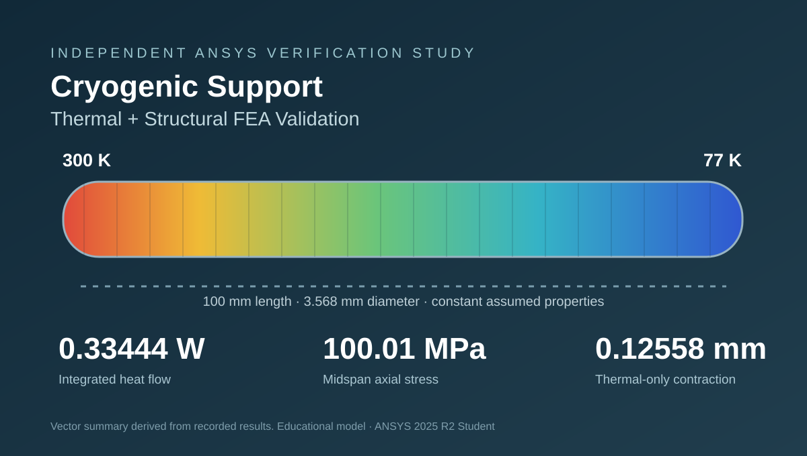

01 / Heat conduction
Steady-State Thermal solved the temperature field from 300 K to 77 K with an adiabatic lateral wall. Boundary reaction heat flow was compared with Fourier's law.
SIMULATION & FEA / SELF-DIRECTED VALIDATION STUDY / 2026
An independent ANSYS Mechanical verification exercise: steady-state heat conduction, axial tension, imported thermal loading, mesh sensitivity and comparison against analytical solutions.

Illustrative SVG generated from recorded ANSYS output values. Not an ANSYS screenshot. The original seven ANSYS screenshots appear in the separate eight-page author report.
Steady-State Thermal solved the temperature field from 300 K to 77 K with an adiabatic lateral wall. Boundary reaction heat flow was compared with Fourier's law.
A 1000 N axial tensile load and a fixed end were assessed using Total Deformation and a Normal Stress Z probe at midspan.
The heat-flow result approached the analytical benchmark under refinement. Global structural displacement stabilized while local fixed-end stress remained mesh sensitive.
Imported Body Temperature was used to compare mechanical-only, thermal-only and combined thermal-structural responses.
| Load case | Max total deformation | Max local von Mises |
|---|---|---|
| Mechanical-only | 0.049961 mm | 132.72 MPa |
| Thermal-only | 0.125620 mm | 41.613 MPa |
| Combined | 0.075735 mm | 114.87 MPa |
Verification of the axial response requires comparing midspan axial stress with F/A rather than the potentially mesh-sensitive peak at a completely fixed rim. The coupled case shortens even under 1000 N tension because the modeled cooling contraction exceeds elastic elongation.
Replace the verification rod with a multi-strut support bracket, use traceable temperature-dependent materials, realistic fasteners and contact conditions, and perform a thermal-versus-stiffness optimization. The current benchmark stays untouched as a reference test.